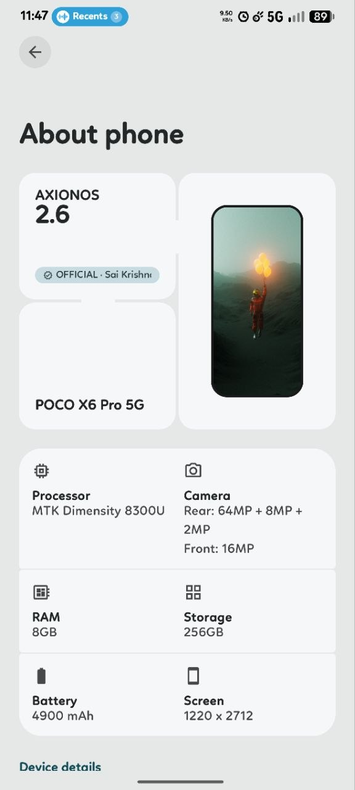
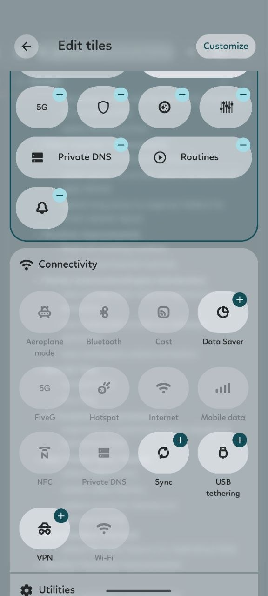
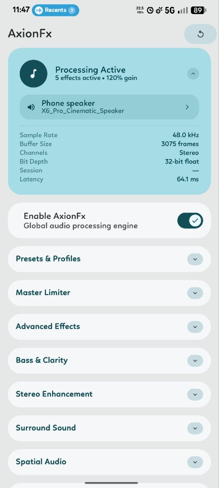
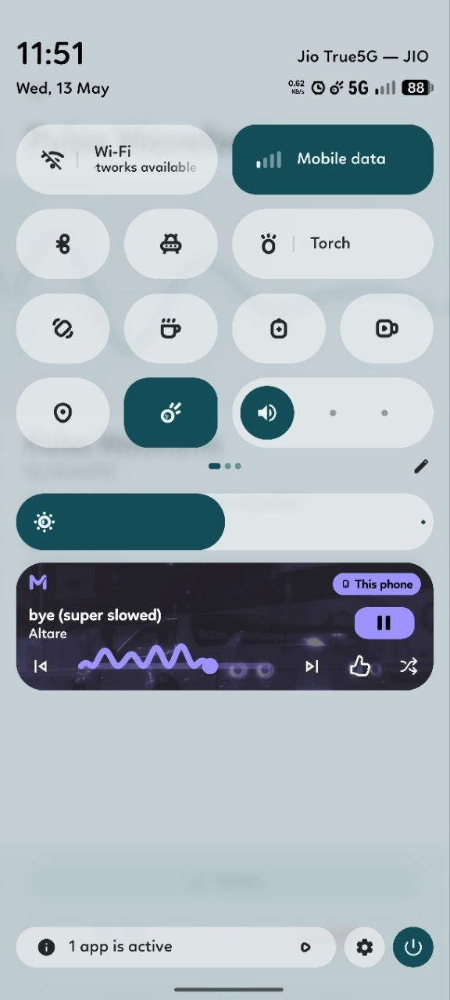
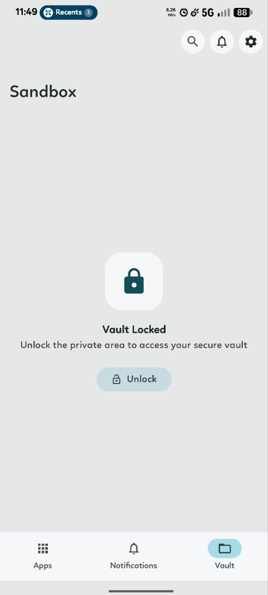
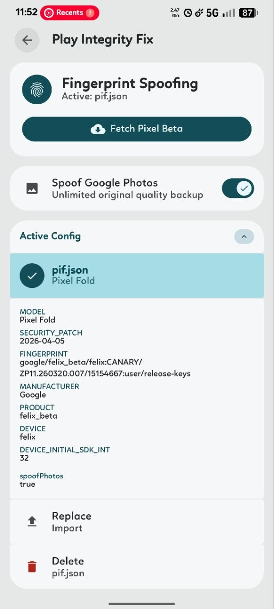
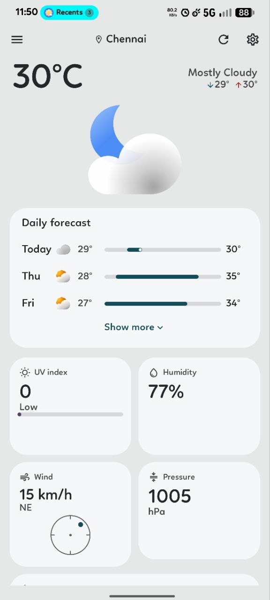
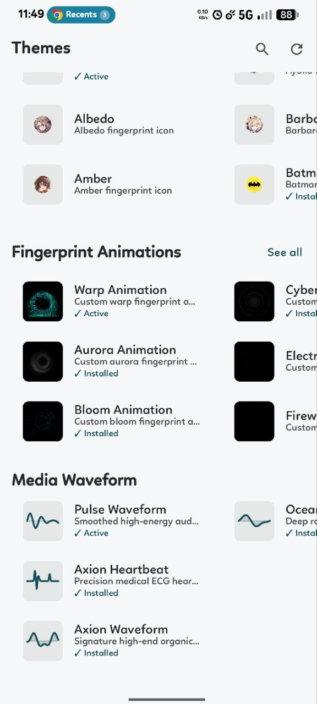

Every pixel, meticulously placed. Explore the visual language of Axion OS. Clean lines, deep contrast, and a user interface designed to get out of your way.








We believe a beautiful operating system is one that doesn't scream for your attention.
We stripped away unnecessary visual noise. What remains is a perfectly balanced interface that prioritizes your content over our design elements.
Built around true blacks and subtle transparent overlays. This creates a striking, premium aesthetic while significantly reducing battery consumption on OLED displays.
Static screens are dead. Every interaction, transition, and gesture in Axion OS is bound by physics-based animations that feel heavy, tactile, and highly responsive.